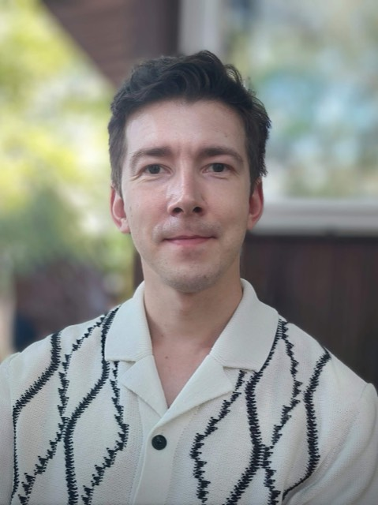

About

I take detector and instrument electronics from requirements through design, integration and commissioning to safe operation.
I have worked in instrumentation for free-electron laser and accelerator facilities for more than ten years. Since 2016 I have been at European XFEL, the X-ray free-electron laser near Hamburg: first as an instrument engineer for the HED and MID scientific instruments, and since 2023 as Engineer for Detector Electronics in the Detectors Group.
In the Detectors Group I lead the work package for electronics development in detector development projects, taking electronics for fast X-ray detectors from concept to a working unit. I also build test setups for readout chips and sensors, and calibration instrumentation for the JUNGFRAU and GOTTHARD-II detectors.
Beyond the hardware, I work on engineering methods. I introduced model-based systems engineering with SysML v2, an AI-assisted engineering workflow and a structured PCB development process to the group’s electronics projects, and I coach colleagues in AI-assisted engineering. I am also responsible for electrical safety in the detector laboratories as VEFK.
Before European XFEL, I designed control systems and power electronics for high-current betatrons at Tomsk Polytechnic University, where I had studied electronics (B.Sc. and M.Sc.).
I am an Executive PhD candidate in Engineering Physics and Materials at Ca’ Foscari University of Venice, working on test instrumentation and AI-assisted model-based systems engineering for X-ray detectors.
Outside work I am a science and space enthusiast, which is why this site has a Science & Space section on interplanetary missions and large research facilities.
- Based inHamburg, Germany
- WorkEuropean XFEL, Detectors Group (since 2023; at European XFEL since 2016)
- EducationExecutive PhD candidate, Ca’ Foscari University of Venice (since 2025) · M.Sc. and B.Sc., Tomsk Polytechnic University
- LanguagesRussian (native) · English (C1) · German (C1, DSD)
- InterestsSpace exploration, sports, languages, philosophy